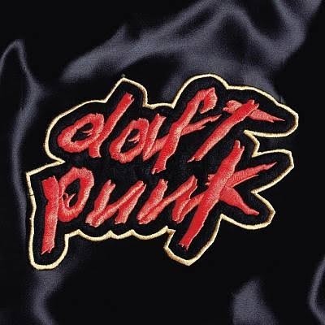

Álbum • 1997
Homework
Homewrok, álbum introdutório, lançado em 1997.
Os lançou ao estrelato e definiu a cena house dos anos 90 com hits crus para as pistas de dança
Faixas
Músicas do álbum
Clique em uma música para assistir ao videoclipe.